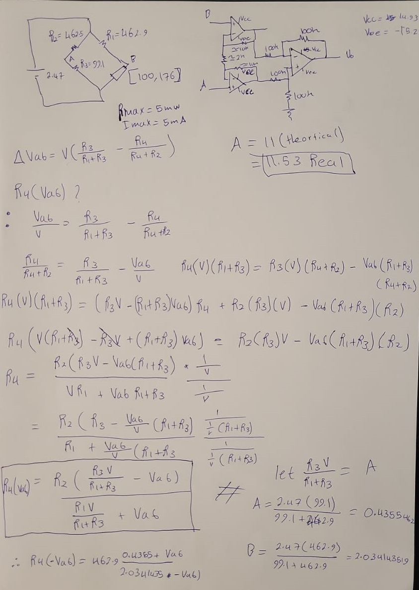
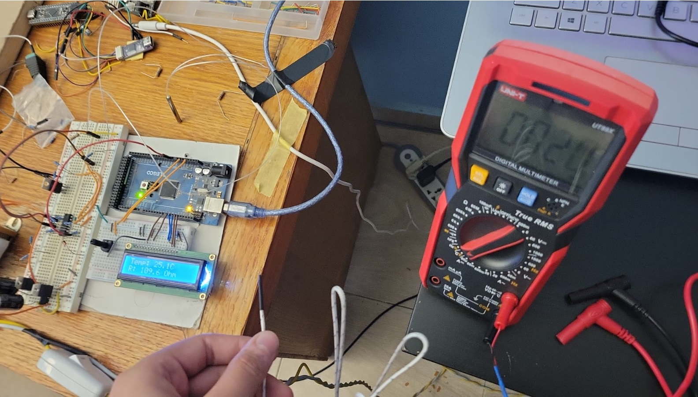

Overview
The goal of this project was to design an accurate thermometer by processing the signal of Resistance temperature detector RTD.
Wheatstone bridge design
An RTD sensor uses a reliable metal, usually platinum, which has a linear change in resistance, and very well documented temperature coefficients. The sensor used in this project was the pt100. Now to convert this very sensitive change in resistance into voltage, a Wheatstone bridge was used, and it was balanced at the minimum temperature. Then, we calculate other resistance values, based on the minimum excitation current to limit self heating error.
Instrumentation amplifier design
The end result, is I was able to lean the design to only 7 ics on just one breadboard, Whereas a standard design might use double that. The trade-off was, The design was less modular for increasing bit count. But the goal, of optimizing logic circuitry, was achieved.
The fix is using an instrumentation amplifier, which delegates all the amplification to the initial followers, then the differential section just subtracts the signal. This minimizes common mode gain and makes it possible to use external op amps despite non idealities, rather than an off the shelf instrumentation IC.
The resistor values of the differential section where meticulously matched to .1% tolerance using a multimeter, and by checking many 100k resistors.

Hardware implmentation
The final step was to trivially code a simple Arduino script which converted the amplifiers voltage and displayed it on the lcd. Initially, I found an error of 5c between it and my multimeters thermometer, but through meticulous calibration it measured with minimal 1c error

Demo Video
Watch the project in action on YouTube.
Results
This project demonstrated to me the meticlousness of analog circuits. Intially, I couldnt get the amplifier to work at all because of resistance value diffrence. op amp circuits require careful connection and component choice, and I was exhillirated when it worked perfectly. I wish to pursue this more.